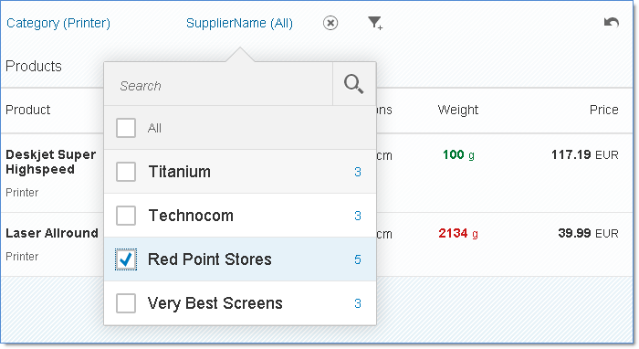

Facet Filter: Simple Type
FacetFilter control is only available for
desktop and tablets.The active facets are displayed as individually selectable buttons on the toolbar as shown in the following figure.

If the user selects a facet in the toolbar, a popover list of the available filters for the selected facet is displayed.
The simple type provides the following functions:
-
With the
showPopoverOkButtonproperty of theFacetFiltercontrol you can display an OK button in the popover. The OK button enables the user to close the popover in addition to the standard behavior ofsap.m.Popover. -
With the
showPersonalizationproperty you enable the user to add facets to the toolbar by selecting the Add Facet icon. Personalization is disabled by default. With the
showSummaryBarproperty you can display the active facets as a non-selectable summary bar. You use this property if you preset facet filters and the user is not allowed to change them.